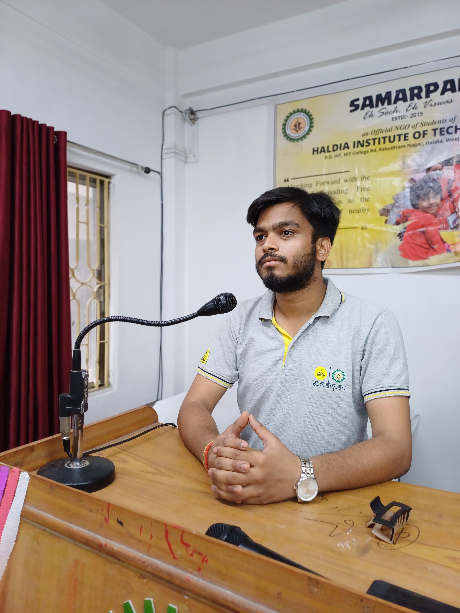

About Us
We are “The Semi-Colons”, a student team dedicated to building accessible digital solutions for a more inclusive democracy. Our project, The Accessible Voting Simulation Platform, helps raise awareness about the barriers of traditional voting, while offering a web-based simulation to promote civic education and engagement.
Designed especially for students, professionals, and institutions, this platform aims to ensure that distance, mobility, or disability never stand in the way of a citizen's right to vote.
Team Name:
The Semi-Colons

Rohan Sharma
(Team Leader)
Dipsubhra Bhunia
Ishu Priya

Priya Basu
Kishor Kumar